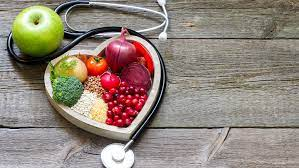

Healthy
Nutrición
¿Es importante la nutrición?
Sí, la correcta nutrición es crucial porque proporciona los nutrientes necesarios para que tu cuerpo funcione adecuadamente, previene enfermedades crónicas como la diabetes y las enfermedades cardíacas, y mejora tu energía y bienestar general. Una dieta balanceada fortalece el sistema inmunológico, apoya el desarrollo físico y mental, y contribuye a mantener un peso saludable, lo cual es esencial para una vida larga y saludable.

¿Cómo tener una buena nutrición?
- Dieta Balanceada: Consume una variedad de alimentos, incluyendo frutas, verduras, granos enteros, proteínas magras y grasas saludables.
- Porciones Adecuadas: Controla las porciones para evitar comer en exceso.
- Hidratación: Bebe suficiente agua a lo largo del día.
- Limita Azúcares y Grasas Saturadas: Reduce el consumo de alimentos y bebidas con alto contenido de azúcar y grasas saturadas.
- Frecuencia de Comidas: Come de manera regular y no te saltes comidas, especialmente el desayuno.
- Leer Etiquetas: Presta atención a las etiquetas nutricionales para hacer elecciones informadas.
- Cocina en Casa: Prepara tus comidas para controlar los ingredientes y las porciones.